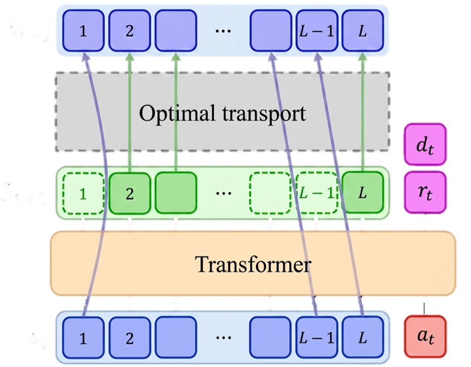
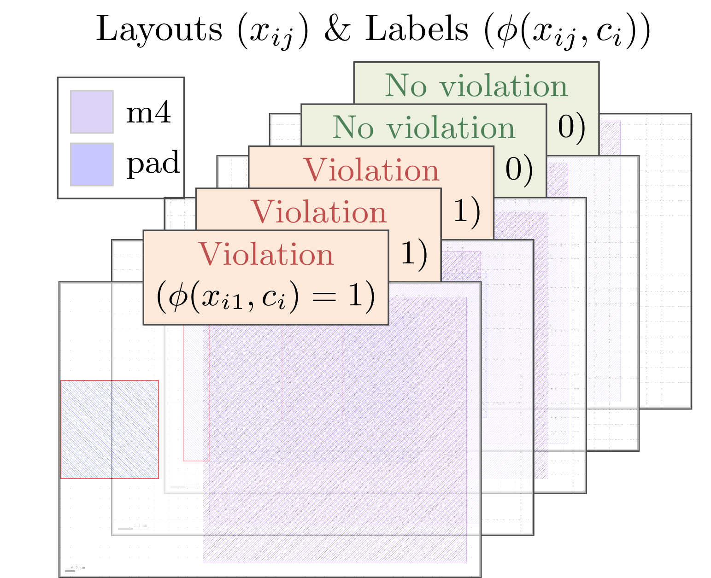

연구 성과
과제 수행 과정에서 발표한 논문과 공개 SW, 특허 목록입니다.
논문
Q-Strata: Hierarchical Bit Allocation for Mixed-Precision Quantization of Mixture-of-Experts LLMs
Deokjae Lee, Sihun Chu, Hyun Oh Song
Empirical Methods in Natural Language Processing (EMNLP), 2026
paper / code / bibtex

Rule2DRC: Benchmarking LLM Agents for DRC Script Synthesis with Execution-Guided Test Generation
Jinuk Kim, Junsoo Byun, Donghwi Hwang, Seong-Jin Park, Hyun Oh Song
International Conference on Machine Learning (ICML), 2026
paper / code / bibtex / project page / poster